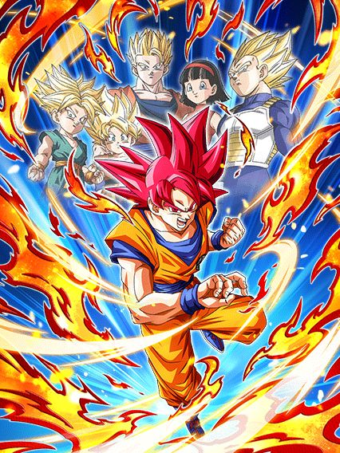
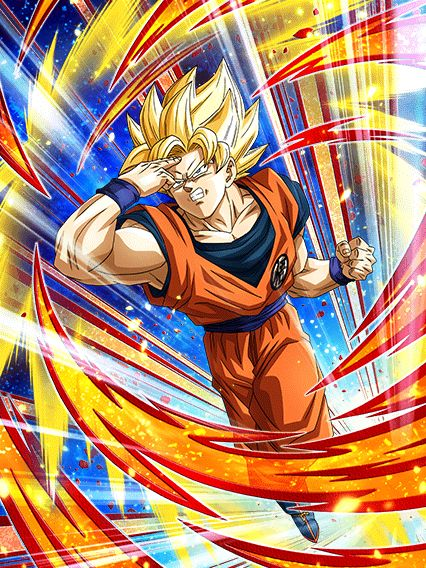
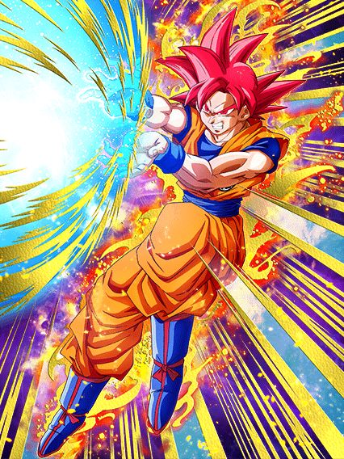
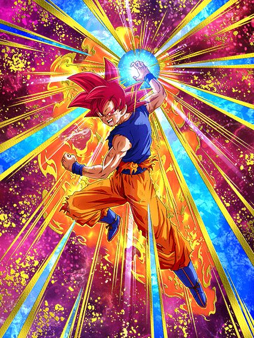
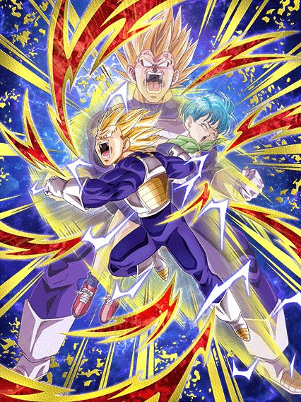
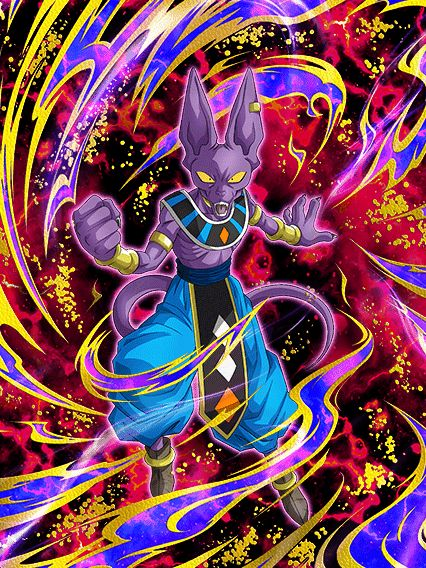
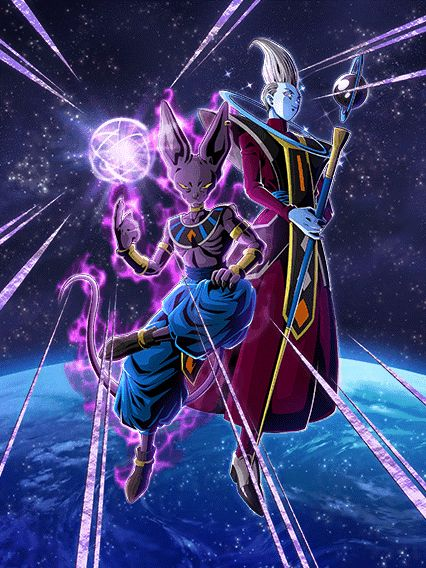
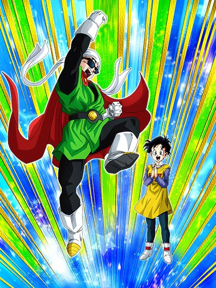

Sheeeeesh, o hype
Quando revelaram na vjump que o goku god iria ser o card da celebração, geral ficou bem hypado pq já tava a anos a espera por um dia dos saiyajins com o goku god, oq é bem justo, já q é a melhor celebração possível pra ele ter destaque e ganhar um dokkan fest de respeito.

O melhor card do jogo.
Não há palavras que descrevam esse card, ele simplesmente é o card mais competente, mais brabo, mais versátil e mais gente boa possível.
Pra começar ele tem um dos melhores combos defensivos do jogo que existe: Defesa ativa + stack, q simplesmente já torna ele um card brabo demais defensivamente.
Mas não para por aí, o rapaz junta isso com 60 fucking % de desvio, ou seja, ele já é um monstro na defesa, mas antes vc tem q tentar acertar ele, e é claro, diferente de certos cards de 70% (sim goku mui), ele desvia de forma competente de supers e aoes.
E isso foi a parte defensiva, já falei da ofensiva do rapaz?
Sabia q esse mano stacka ATK tmb? E sabe oq mais? Super adicional garantido pra ele stackar mais e mais rápido, e tudo isso pegando apenas 6 orbs
Parece difícil? Não é. (Já falei q é o melhor card do jogo?) Pq o goku é versátil demais e literalmente entra em qualquer time de floater ou não, já q ele é autosuficiente e cria os próprios orbs q ele vai usar, precisa falar mais?
Junta isso com uma top intros mais lindas e osts maravilhosas e vc tem exatamente: o melhor card do jogo.

A active do goku virando ssj é muito boa, mas entra na situação do gohan teq onde vc não tem motivo pra transformar o card e perder o stack.
Pelo menos diferente do gohan teq, dá pra transformar o goku god pra finalizar a luta já q ele tem 70% de desvio antes de atacar, além de manter a defesa q vc já stackou e crítico garantido, mas no geral nem precisa então meh
O raditz voltou no banner desse cara e ainda sim summon era garantida, isso q é potência slk.

Esse card secundário é muito brabo.
Ele não é necessáriamente o melhor parceiro existente do goku god mas ele foi bem insano, tendo o raro suporte q dura mais de 1 turno e tmb defesa ativa por 5 turnos.
Um grande problema do card é que ele precisa tomar ataques pra buildar (precisando de 6 pra transformar) e no primeiro turno ele é bem frágil apesar de ganhar defesa bem rápido, ainda sim se vc usar ele de floater ele provavelmente vai ser cozinhado vivo se a defesa ativa acabar e vc não conseguir transformar ele.
Falando da transformação dele..

Dêem a ele um movie bosses e deixem ele cozinhar.
Se vc usar esse cara em uma rotação principal vc talvez esteja louco, mas pelo menos vc vai transformar ele e ouvir uma ost muito boa.
Não é muito difícil explicar esse card, ele só dá bastante dano e tem bastante crítico, e se estiver contra um movie bosses ele dá mais dano e mais um adicional, basicamente isso.
E ele fica com defesa ativa permanente oq é legal mas não espere dele 900k de DEF ou algo assim pq não rola, pelo menos ele linka bem com o vegeta e trunks..


Um suporte bom e um mid.
O teq é decente mas deixa a desejar já q ele precisa de bond of master and disciple e realm of gods pro kit todo dele, enquanto o int já tem suporte e 50% de desvio (é meio difícil ele desviar mas eeeeeee tamo aí)
  
Defina o termo "mid"
São eles.
Ok, até que o goku god str é usável, mas o resto é realmente mid pra horrível
O int seria interessante mas fica efetivo toda vez que ele ataca 3 vezes, oq é ridículo, o agl stacka 50% de ATK mas tem uma defesa horrível e ganha 30% de crítico por ATAQUE LEVADO
O str pelo menos tem stats decentes de 30% e redução de dano, oq ajuda ele a pelo menos ser mais decente, tá ótimo considerando q mais da metade desses ezas são horríveis.

Passiva estranha, mid.
Mais um card com stats baixos e com um pedaço da passiva estranho
30% de chance de dar um adicional em 2023? Bruh 💀
Ele tmb ganha buff se estiver contra 2 inimigos, mas isso é inútil.
 
O que era pra ser isso..?
Esse card é o clássico "tanka auto attack e morre pra qualquer super"
Ele tem redução de dano contra apenas auto attack e dá counter em todos, mas apenas isso
É ridículo, simplesmente nada a dizer a não ser rir desse rapaz
Ele tem o rage mode de um pouquinho de dano, mas sem crítico, sem efetivo, sem adicional
Podre.

o lider nuker.
Bom, o bills não tem defesa mas tem um ataque decente e é um lider nuke, então, é só isso mesmo, não dá pra reclamar.

Esse foi um eza interessante.
Sendo infelizmente o único eza decente da celebração toda, esse card tem uma defesa interessante, cura bastante vida, tem um bom dano e 50% de desvio oq é sempre bom, uma pena q ele não entra em basicamente nenhum time exceto realm of gods e só linka com outros bills ou whis.
")
Sim, esse é o verdadeiro primeiro de abril.
Eu vos apresento: um card inútil que não dá dano, não tem defesa e não ajuda em absolutamente nada
Pra melhorar, esse card ainda é uma fraude, já q veja bem:
Esse card custa 777 gemas verdes na baba shop, digamos que você não quer gastar kaioshins pra upar o super dele, e tmb quer deixar ele rainbow
Isso daria um total de 14 cópias, ou seja, 10878 GEMAS EM UM CARD INÚTIL
E claro, isso sem contar se vc quisesse comprar mais 5 cópias pra upar o super dele pós eza, que daria 19 cópias ou 14763 gemas.. 💀
")
Esse card pode cozinhar o cell max... pera WHATA-
Essa Bulma foi um dos 2 EZAs de primeiro de abril, e cara, que card genial
Pra começar ela é um awaken de uma bulma muito antiga e é um awaken MUITO BOM, e ainda o EZA deixou melhor ainda
Pra começar essa bulma tem uma introzinha super simples dela conhecendo o goku, q não tem voz nem ost mas pô, momento importante pra história né, maneiro, e mlk essa intro vem com um buff só um pouquinho desbalanceado..
Ela tem 50% de chance de desvio sem condição nenhuma oq já é ótimo, mas a intro dá pra ela simplesmente +29% de chance de desvio por 4 turnos, oq é pouco, mas MLK, é praticamente 80% de chance de desviar, ela tem mais desvio q o goku mui
Além disso ela tem uma mecânica muito genial de, a cada ataque q ela desviar antes de atacar, ela ganha 41% de ATK no turno.. já sabe oq vai acontecer se tiverem 5 ataques no slot 1 né?
Como se não bastasse, ela aínda é um suporte pra DB Saga, literalmente só mais um buff insano pro time do gokuzinho, cara, q card incrível
Tipo, sim, ela precisa do gokuzinho no time pra ter um pedaço da passiva mas ele é o lider perfeito pra DB Saga, então nem faz diferença, cê não vai usar a bulma em outro time

Literalmente o "POV: Você é o Grande Saiyaman"
Outro eza de primeiro de abril e honestamente eu gosto demais desse card, não só a animação do super attack dele é genial, mas a arte é muito boa e ele tem um kitzinho decente até
Chance de crítico, chance de desvio, suporte..
Lógico, só pra incrível categoría defenders of justice, mas pelo menos esse card é muito bom pra debuffar e selar no battlefield por exemplo, ele tem seus usos..
Você chegou ao fim dessa página!
Obrigado por ler tudo, e fica a vontade pra ver outras